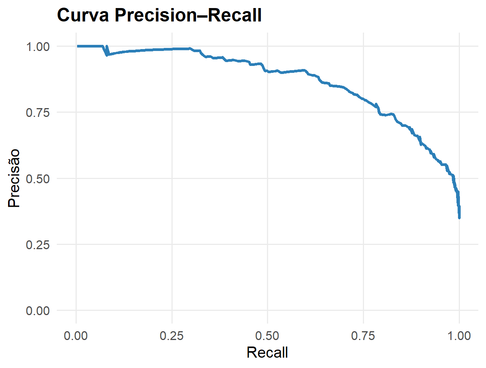

Parte I : Aprendizado Supervisionado
Decisão, Avaliação e Interpretabilidade
Semana 11
Fechamento do aprendizado supervisionado
Até aqui aprendemos a construir modelos
Agora precisamos distinguir quatro etapas:
\[ \boxed{ \text{predizer} \rightarrow \text{decidir} \rightarrow \text{avaliar} \rightarrow \text{interpretar} } \]
Organização da semana
Encontro 11.1
- regra de Bayes
- custos assimétricos
- cutoff
- ROC e AUC
- desbalanceamento
- Precision–Recall
- combinação de classificadores
Encontro 11.2
- interpretabilidade global e local
- PDP
- ICE
- LIME
- limitações das explicações
Encontro 11.1 — Decisão e avaliação
Regra de Bayes
Para classificação binária, defina
\[ \eta(\mathbf x) = P(Y=1\mid\mathbf X=\mathbf x) \]
Sob perda 0–1 simétrica,
\[ \boxed{ g^*(\mathbf x) = I\left\{\eta(\mathbf x)>\frac12\right\} } \]
A regra ótima ainda pode errar
Em um ponto \(\mathbf x\), o menor risco possível é
\[ \boxed{ R^*(\mathbf x) = \min\{\eta(\mathbf x),1-\eta(\mathbf x)\} } \]
Logo,
\[ \boxed{ R^* = E[R^*(\mathbf X)] } \]
é o erro de Bayes
Probabilidade e decisão
Um modelo pode produzir
\[ \widehat\eta(\mathbf x) \]
A decisão exige um cutoff
\[ \boxed{ \widehat g_c(\mathbf x) = I\{\widehat\eta(\mathbf x)>c\} } \]
Alterar \(c\) modifica a decisão, não as probabilidades estimadas
Perdas assimétricas
Quando os erros têm custos diferentes
Considere
| Verdadeiro | Decidir 0 | Decidir 1 |
|---|---|---|
| \(Y=0\) | \(0\) | \(C_{FP}\) |
| \(Y=1\) | \(C_{FN}\) | \(0\) |
O risco condicional da decisão 1 é
\[ R(1\mid\mathbf x) = C_{FP}[1-\eta(\mathbf x)] \]
e da decisão 0 é
\[ R(0\mid\mathbf x) = C_{FN}\eta(\mathbf x) \]
Cutoff ótimo
Escolhemos classe 1 quando
\[ C_{FP}[1-\eta(\mathbf x)] < C_{FN}\eta(\mathbf x) \]
ou
\[ \boxed{ \eta(\mathbf x) > c^* = \frac{C_{FP}} {C_{FP}+C_{FN}} } \]
Como os custos deslocam o cutoff?
Se
\[ C_{FN}>C_{FP} \]
então
\[ c^*<0.5 \]
e favorecemos sensibilidade
Se
\[ C_{FP}>C_{FN} \]
então
\[ c^*>0.5 \]
e exigimos mais evidência para predizer a classe positiva
Métricas e cutoff
Matriz de confusão
| Predito 1 | Predito 0 | |
|---|---|---|
| Verdadeiro 1 | VP | FN |
| Verdadeiro 0 | FP | VN |
As métricas resumem tipos distintos de erro
Sensibilidade e especificidade
\[ \boxed{ Sensibilidade = \frac{VP}{VP+FN} } \]
\[ \boxed{ Especificidade = \frac{VN}{VN+FP} } \]
Ao reduzir o cutoff, em geral aumentamos sensibilidade e reduzimos especificidade
Precisão e \(F_1\)
\[ \boxed{ Precisão = \frac{VP}{VP+FP} } \]
\[ \boxed{ F_1 = 2\frac{Precisão\times Recall} {Precisão+Recall} } \]
As métricas respondem a perguntas diferentes
Curva ROC
Variando o cutoff
Para cada \(c\) calculamos
\[ TPR(c)=Sensibilidade(c) \]
e
\[ FPR(c)=1-Especificidade(c) \]
A curva ROC representa
\[ \boxed{ FPR(c) \quad\text{versus}\quad TPR(c) } \]
AUC
A área sob a curva ROC é
\[ \boxed{ AUC = \int_0^1 ROC(u)\,du } \]
Uma interpretação é
\[ \boxed{ AUC = P(S_1>S_0) } \]
A AUC mede capacidade de ordenação, não escolhe o cutoff operacional
Classes desbalanceadas
Acurácia pode enganar
Se
\[ P(Y=1)=0.02 \]
um classificador que sempre prediz 0 tem
\[ Accuracy=98\% \]
mas
\[ Sensibilidade=0 \]
Balanced Accuracy
\[ \boxed{ Balanced\ Accuracy = \frac{Sensibilidade+Especificidade}{2} } \]
A métrica atribui peso igual ao desempenho nas duas classes
Curva Precision–Recall
Ao variar o cutoff, obtemos
\[ \left( Recall(c),Precision(c) \right) \]
Em problemas fortemente desbalanceados, essa curva evidencia diretamente o comportamento na classe positiva

Três níveis de intervenção
Podemos atuar sobre:
\[ \boxed{ \text{dados} \qquad \text{função de perda} \qquad \text{decisão} } \]
- reamostragem altera os dados de treinamento
- pesos/custos alteram a função objetivo
- cutoff altera a decisão final
Essas intervenções não são equivalentes
Reamostragem sem vazamento
Se utilizarmos oversampling, undersampling ou SMOTE dentro de validação cruzada, a reamostragem deve ocorrer apenas no conjunto de treino de cada fold
\[ \boxed{ \text{reamostrar dentro do fold de treino} } \]
Combinação de classificadores
Hard voting
Se
\[ g_1(\mathbf x),\ldots,g_M(\mathbf x) \]
produzem classes, podemos usar
\[ \boxed{ g_{ens}(\mathbf x) = \operatorname{moda} \{g_1(\mathbf x),\ldots,g_M(\mathbf x)\} } \]
Soft voting
Se os classificadores produzem probabilidades,
\[ \boxed{ \overline p_k(\mathbf x) = \frac1M \sum_{m=1}^{M} \widehat p_{mk}(\mathbf x) } \]
e
\[ \widehat g(\mathbf x) = \arg\max_k\overline p_k(\mathbf x) \]
A combinação também deve ser definida usando treino e validação
Encontro 11.2 — Interpretabilidade
Por que interpretar um modelo?
Depois de selecionar um modelo com bom desempenho, podemos perguntar:
- como as predições mudam com as covariáveis?
- o comportamento é igual para todas as observações?
- por que uma observação específica recebeu determinada predição?
\[ \boxed{ \text{predição} \neq \text{interpretação} \neq \text{causalidade} } \]
Global × local
Global
Queremos compreender o comportamento geral de
\[ \widehat g(\mathbf x) \]
Local
Queremos compreender uma predição específica
\[ \widehat g(\mathbf x^*) \]
PDP
Dependência parcial
Para a covariável \(X_j\),
\[ \boxed{ \widehat h_j(x) = \frac1n \sum_{i=1}^{n} \widehat g(x,\mathbf x_{i,-j}) } \]
O PDP descreve a predição média do modelo quando fixamos \(X_j=x\)
O que o PDP descreve?
Se
\[ \widehat h_j(x) \]
cresce com \(x\), o modelo produz, em média, predições maiores nessa região
Isso descreve
\[ \boxed{ \text{o comportamento de }\widehat g } \]
e não um efeito causal
ICE
Curvas individuais
Para a observação \(i\),
\[ \boxed{ \widehat h_{j,i}(x) = \widehat g(x,\mathbf x_{i,-j}) } \]
Traçamos uma curva para cada observação em vez de calcular imediatamente a média
Relação PDP–ICE
\[ \boxed{ \widehat h_j(x) = \frac1n \sum_{i=1}^{n} \widehat h_{j,i}(x) } \]
Logo,
\[ \boxed{ PDP = \text{média das curvas ICE} } \]
O que ICE acrescenta?
Curvas aproximadamente paralelas sugerem comportamento homogêneo
Curvas com formas distintas podem revelar heterogeneidade e interações no modelo
Uma limitação do PDP
Com covariáveis fortemente dependentes, fixar \(X_j=x\) pode criar combinações pouco representadas pelos dados
\[ \boxed{ \text{PDP pode consultar o modelo em regiões de baixo suporte} } \]
LIME
A pergunta local
Para uma observação
\[ \mathbf x^* \]
queremos explicar
\[ \widehat g(\mathbf x^*) \]
A ideia é aproximar localmente o modelo complexo por um modelo interpretável
Passos
\[ \boxed{ \mathbf x^* \rightarrow \text{perturbações} \rightarrow \widehat g(\mathbf z_b) \rightarrow \text{pesos locais} \rightarrow \text{modelo simples} } \]
As observações mais próximas de \(\mathbf x^*\) recebem maior peso
Formulação geral
\[ \boxed{ q^* = \arg\min_{q\in\mathcal G} \left\{ \mathcal L(\widehat g,q,\pi_{\mathbf x^*}) + \Omega(q) \right\} } \]
O primeiro termo mede fidelidade local
O segundo controla a complexidade da explicação
Comparando as ferramentas
| Método | Escopo | Pergunta |
|---|---|---|
| PDP | global | como a predição média muda com \(X_j\)? |
| ICE | individual/conjunto | esse comportamento varia entre observações? |
| LIME | local | por que esta observação recebeu esta predição? |
Síntese
\[ \boxed{ \text{predizer} \rightarrow \text{decidir} \rightarrow \text{avaliar} \rightarrow \text{interpretar} } \]
A qualidade da explicação não substitui a avaliação fora da amostra